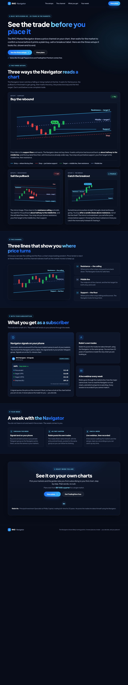
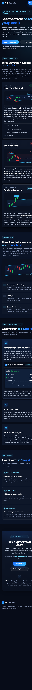

Recommended base · #1
v3 — Setups-first bento
A tight hero, then straight into the three trades as annotated candlestick "trophy" cards. Lead card shows the full trade: entry, protective stop, two targets, plus a plain legend. Then the channel anatomy, a "what you get" bento with an example signal, a week strip, and one CTA.
Desktoplive ↗

Mobile

Strongest moves
- Geometry verified: buy fires ≈50% up from support, sell ≈50% down from resistance, breakout on the close above the ceiling.
- Lead card reads as one complete trade — stop below support, targets at middle then resistance, with a legend.
- Varied tile depth + per-card glow; stacks cleanly to one column on mobile, no interaction needed.
Caveat: the three lead charts are hand-placed SVG, so re-tuning a channel angle later is manual rather than generated.